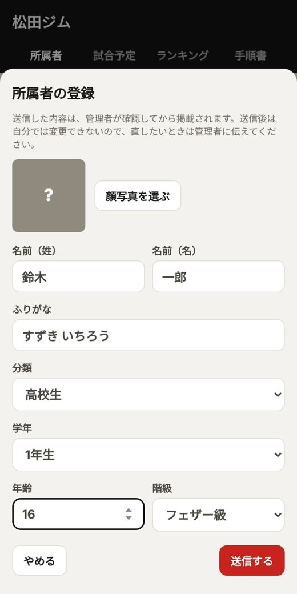
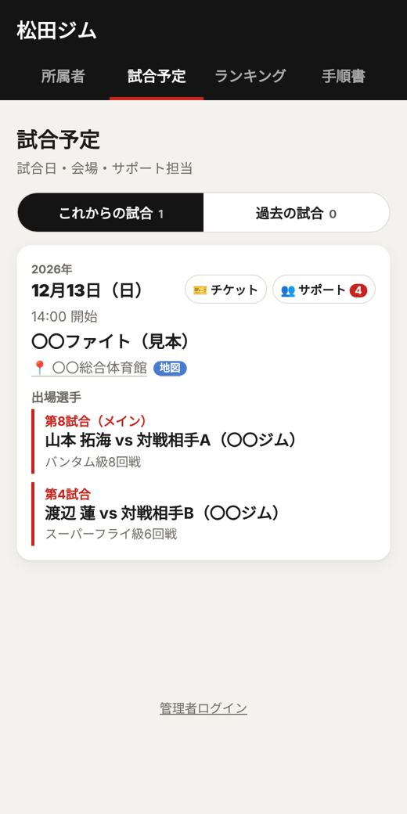
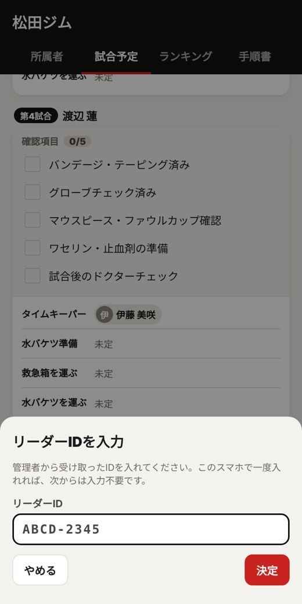
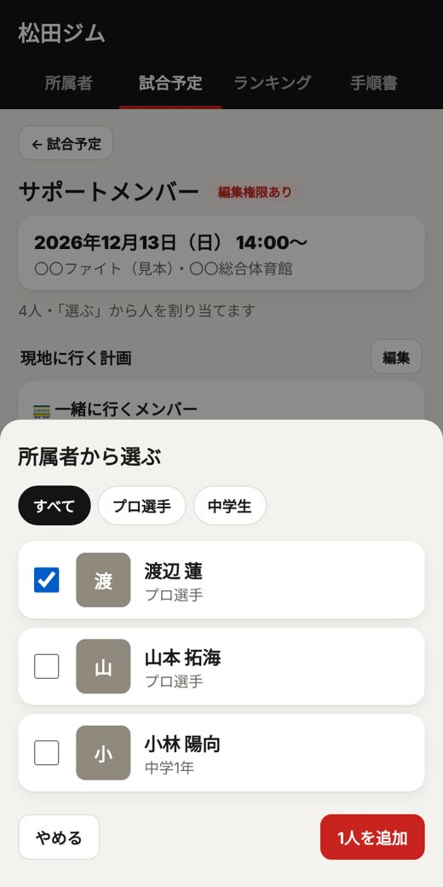
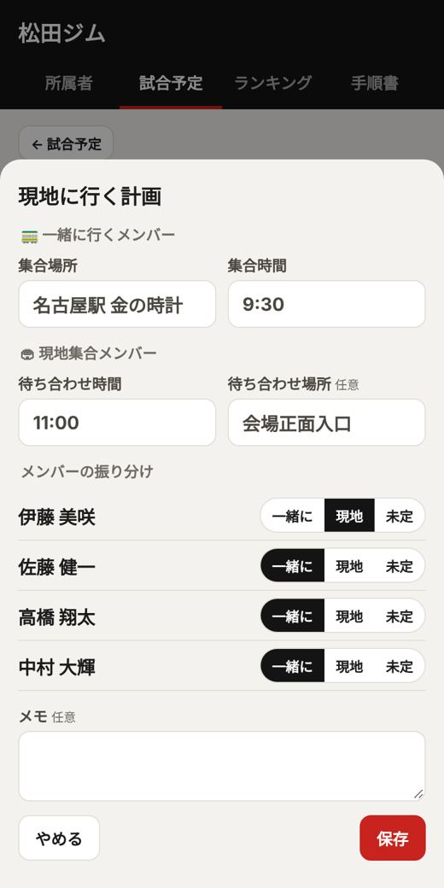
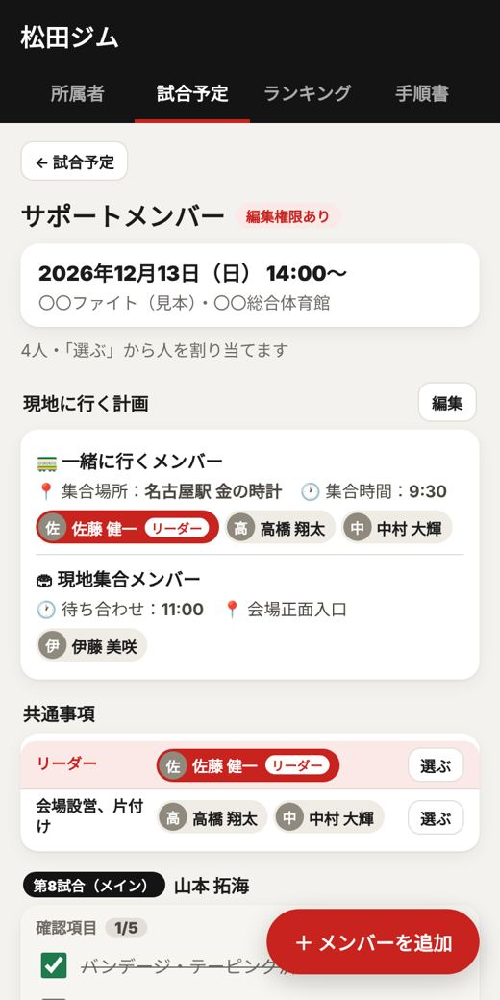
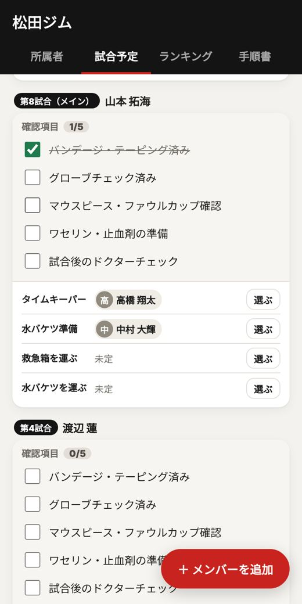
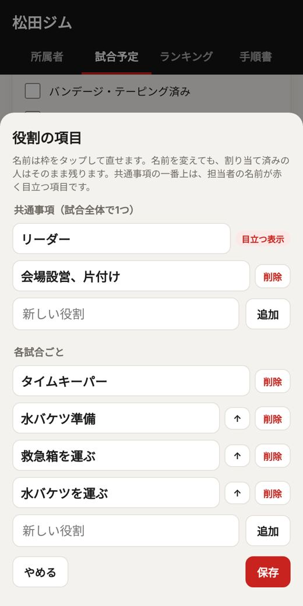

第1部所属者の登録のしかた
ジムの所属者（会長・トレーナー・プロ選手・練習生・一般会員・学生）は、このアプリから自分で登録を申し込みます。ログインやアカウント作成は不要です。送った内容は管理者が確認してから一覧に載ります。
1アプリを開いて合言葉を入れる
管理者から送られたリンクを開きます。
simagonz3150-sys.github.io/boxing-app/gym/
MBGのロゴと入力欄が出たら、ジムで聞いた合言葉を入れて 開く を押します。
合言葉は一度入れれば、そのスマホでは次から入力不要です。合言葉はジムの人以外に教えないでください。

2「＋ 登録する」を押す
最初に開く「所属者」の画面で、右下の赤い ＋ 登録する を押します。
上の分類ボタン（トレーナー・プロ選手・中学生など）を押すと、その分類の人だけを表示できます。

3自分の情報を入れて送信する
| 顔写真 | 「顔写真を選ぶ」から撮影、または写真を選ぶ（必須）。顔が真ん中に来るように |
|---|---|
| 名前 | 姓と名を分けて入力 |
| ふりがな | ひらがなで入力 |
| 分類 | 会長／トレーナー／プロ選手／練習生（プロ志望）／一般会員／大学生／高校生／中学生／小学生 |
| 学年 | 学生を選んだときだけ表示。今の学年を選ぶ |
| 年齢・階級 | 年齢は数字だけ。階級は決まっていれば選ぶ |
入力できたら 送信する を押します。

4管理者の確認を待つ
「送信しました」と出たら完了です。管理者が確認すると「所属者」の一覧に載ります。
- 送信したあとは、自分で内容を直すことはできません
- 名前の間違い・写真の差し替え・削除をしたいときは、管理者に伝えてください
5ホーム画面に追加して、アプリのように使う
ホーム画面に追加すると、「試合サポートメンバー」のアイコンからすぐ開けます。ブラウザのアドレス欄が消えて、普通のアプリのように全画面で使えます。
- Safariでアプリのリンクを開く
LINEで開いた場合は、右下の「…」→「Safariで開く」 - 画面下の共有ボタン（□↑）を押す
- メニューを下にスクロールして「ホーム画面に追加」を押す
- 名前が「試合サポートメンバー」になっているのを確認して、右上の「追加」
- Chromeでアプリのリンクを開く
- 右上の「︙」（メニュー）を押す
- 「ホーム画面に追加」（または「アプリをインストール」）を押す
- 「追加」（または「インストール」）を押す
メンバー
このアイコンが出ます
合言葉は、ホーム画面のアイコンから開いたときにもう一度だけ入力が必要になることがあります。アイコンを削除してもアプリのデータは消えません。
第2部リーダーになったら
リーダーは、試合ごとのサポートメンバー（誰が・どの試合で・どの役割をするか）を決める人です。管理者から「リーダーID」を受け取ると、サポートメンバー画面を操作できるようになります。
リーダーができること
| できる | サポートメンバーの追加・外す／役割の割り当て／現地に行く計画の入力／確認項目のチェックと項目の編集／役割の項目の追加・名前の変更 |
|---|---|
| できない | 所属者・試合予定・チケット・手順書・ランキングの編集（管理者のみ） |
1試合の「👥 サポート」を開く
「試合予定」タブで、担当する試合の日付の右にある 👥 サポート を押します。
終わった試合は「過去の試合」に移ります。記録はそのまま残ります。

2リーダーIDを入れる（最初の1回だけ）
サポートメンバー画面の一番下にある リーダーIDを入力 を押し、管理者から受け取った8文字のID（例：ABCD-2345）を入れて 決定。
見出しの横に「編集権限あり」と出れば成功です。そのスマホでは次から入力不要です。
リーダーIDは他の人に教えないでください。管理者がIDを削除すると、すぐに操作できなくなります。

3サポートメンバーを追加する
右下の ＋ メンバーを追加 を押すと、所属者が顔写真付きで出ます。分類で絞り込み、手伝う人にチェックを付けて ○人を追加。
外すときは、画面下の「メンバー一覧・外す」を開いて 外す を押します（所属者の登録は消えません）。

4現地に行く計画を入れる
画面の一番上「現地に行く計画」の 編集 から入力します。
- 一緒に行くメンバー：集合場所・集合時間
- 現地集合メンバー：待ち合わせ時間（場所は任意）
- メンバーの振り分け：1人ずつ「一緒に／現地／未定」をタップ

5役割を割り当てる
共通事項（リーダー・会場設営など試合全体で1つ）と、各試合の選手ごと（タイムキーパー・水バケツなど）に分かれています。
各役割の右の 選ぶ を押し、担当する人にチェックを付けて 決定。
共通事項の「リーダー」になった人は、どの行でも名前が赤く表示されます。

6確認項目にチェックする
各試合の見出しのすぐ下に、チェックボックス付きの確認項目があります。終わったものをタップしてチェックします（その場で保存）。
「確認項目 3/5」のように進み具合が出て、全部終わると数字が緑になります。

7項目を追加・名前を変える
画面下の 確認項目を編集・役割の項目を編集 から、項目の追加・削除・並べ替え（↑）・名前の変更ができます。
名前を変えても、割り当て済みの人やチェックはそのまま残ります。
項目は全試合で共通です。変えると他の試合の表示も変わります。

困ったときは
| 「このリーダーIDは使えなくなっています」と出る | IDが削除・変更されています。管理者に新しいIDをもらってください |
|---|---|
| 合言葉の画面に戻ってしまった | 合言葉が変更されました。管理者に新しい合言葉を聞いてください |
| リーダーをやめたい | サポートメンバー画面の一番下「このスマホのリーダーをやめる」 |